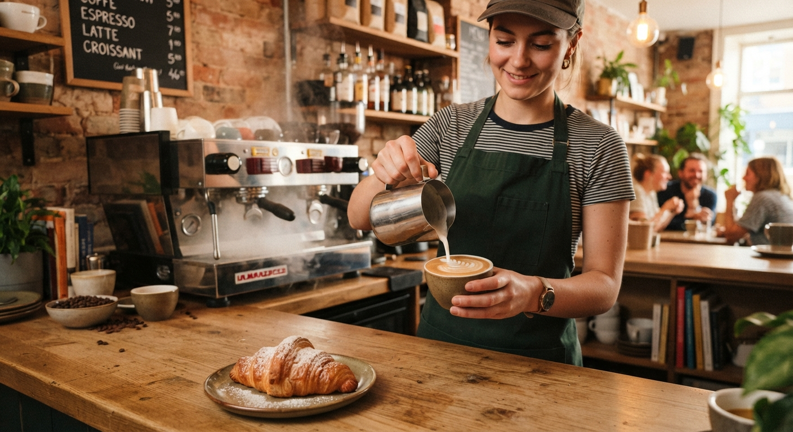

Лінійка «Осінні спешелті-напої»
Серія з 5 авторських рецептів кавових напоїв із пряним гарбузом, горіховим сиропом та вершковою пінкою.

Привіт! Ми — затишна кав’ярня з 5-річним досвідом приготування спешелті-кави, авторських напоїв та свіжої випічки. На цьому сайті ми ділимося історією кав’ярні, актуальним меню та власними кавовими проєктами.
Серія з 5 авторських рецептів кавових напоїв із пряним гарбузом, горіховим сиропом та вершковою пінкою.
Зручний каталог напоїв і випічки з підбором об’єму, альтернативного молока та бронюванням столиків.
Покроковий гід із помелу зерна, пропорцій води, температури заварювання та базової сенсорики.
Спеціальні сніданкові пропозиції з випічкою власного виробництва та свіжозвареним еспресо або фільтром.
Щомісячні зустрічі гостей із каппінгом різних сортів обсмажування та розбором профілю смаку.
Система бонусів для постійних гостей і знижка на напої у власних термокухлях для підтримки екології.